IROBOT
美国艾罗伯特
吸尘机器人ROOMBA880
Robot Roomba 880适合过敏症患者以及家有宠物的家庭，独有的Aeroforce 高性能清扫系统全面换新，最大余力的发挥真空清洁效能。无毛刷设计，一对表面覆盖虚实胎纹的滚筒，一路对向高速驰骋。
￥4999
IROBOT
美国艾罗伯特
扫地机器人Roomba980
iRobot Roomba 980在造型设计上延续Roomba 880的设计，以黑灰配色为主，但通过应用控制功能将这份易用性带到了新的高度。在Wi-Fi和应用控制的帮助下，你可以通过计划安排让它在任何时候从集中任何地方开始工作，好让你在回家时总是能够看到干净的地面。
￥8399

ECOVACS
科沃斯
擦窗机器人W855
科沃斯窗宝又称擦玻璃机器人,科沃斯W855依靠全新的风机设计，突破单一光滑界面的限制，适用于更多清洁介质；配合致简轻巧的设计理念，使用便捷，清洁效率高。智能防跌落。高效四重清洁系统。智慧风机不仅能在有框、无框、磨砂、贴膜等玻璃介质上工作还适用于镜面、大理石、木质等介质，扩大日常清洁范围。
￥2580
SIEMENS
西门子 西班牙进口
嵌入式洗碗机SC76M640TI
西门子洗碗机SC76M640TI，采用简约黑色玻璃面板，深蓝氛围灯，更契合现代厨室美学。光感技术和负载感应系统可以智能判断餐具脏污程度餐具数量，系统将自动调整到合适的水温水压，达到理想洗涤效果。4层喷淋水幕全面覆盖餐具，出水口均按不同角度倾斜布置并采用合理间距，配合上喷淋臂的旋转，实现360度无死角冲刷
￥8699
FOTILE
方太
水槽洗碗机JBSD2F-Q5
JBSD2F-Q5 外观上采用超薄设计，自由选择台上、台中(嵌入)两种安装方式。技术上采用高频超声+湍流，纯物理洗净能力，轻松去除90%的果蔬农药残留。除菌烘干，碗筷即刻干净。零能耗透气烘干，不用抹布擦拭，魔术低置于碗槽底部，把洗碗槽转换为水槽，轻松实现功能转换，让你轻松享受厨房生活。
￥8999
LG
产地韩国 进口洗衣机
烘干滚筒WDRH657C7HW
LG WDRH657C7HW滚筒洗衣机，外观采用了银色，四方立体的简约设计，不失庄重。采用了蒸汽除菌技术，深层渗透衣物，有效除菌，而且大人小孩衣物可以分开洗，减少了交叉感染，保护宝宝健康。同时蒸汽可以清新柔顺衣物，在保持衣物清新不走样的情况下，保持衣物蓬松有活力。
￥18999
BOSCH
博世 10公斤 滚筒洗衣机
WAU28669HW
WAU28669HW定位为高端系列，除去智能模块，再从性能上来看，也保持在一个不错的水准，符合博世高端款的一贯品质。外形方面，采用双弧线设计的降噪侧板，减少震动从而降低噪音。性能方面，采用1400转BLDC变频电机，支持除菌液洗和90℃高温桶自洁，支持快洗、单漂洗、单脱水、羊毛洗等14种洗涤程序。
￥6990